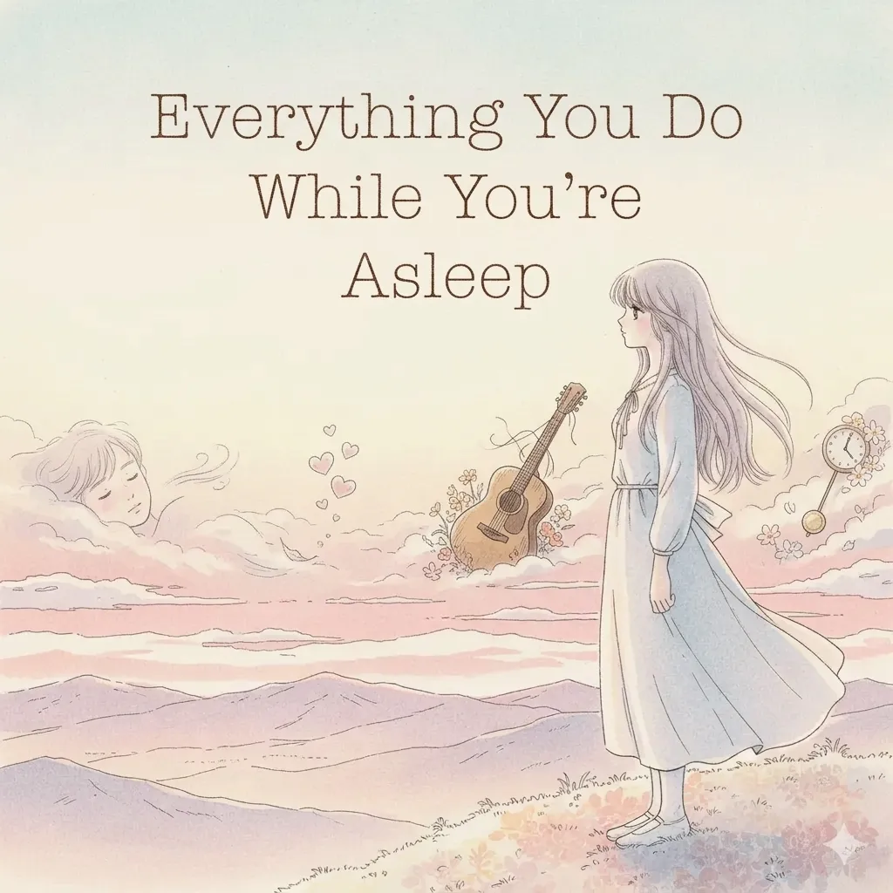

Everything You Do While You're Asleep

眠るあなたのおならやいびきにさえ安らぎを見いだす歌。
Lyricskeyboard_arrow_down
Drifting alone inside my head
Thinking till my mind is worn and dead
My body's cold, I'm sorry it's that way
But I curl up close to you beneath the covers where we lay
The sound of your little toot goes softly in the night
And my own hungry belly starts to rumble at the sight
You don't know a thing, just breathing soft and slow in your sleep
And you smile inside a dream at the toot I give you back so sweet
The hint of morning calls to me
My backside's itching restlessly
I catch my breath but I'm still half-asleep
So back beneath the covers, into hiding I creep
The sound of your soft snoring lets me breathe and settle down
A little worried, still the sound soaks in and calms me all around
My rusty old guitar gives off a little gentle ring
And it turns into a song in time with the ticking clock's swing
Each time I look back
Guilty things I lack
Come and start to attack
But I blow them all back
The sound of your little toot goes softly in the night
And my own hungry belly starts to rumble at the sight
You don't know a thing, just breathing soft and slow in your sleep
And you smile inside a dream at the toot I give you back so sweet